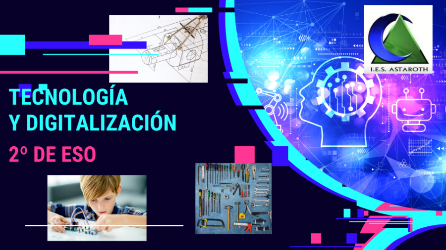
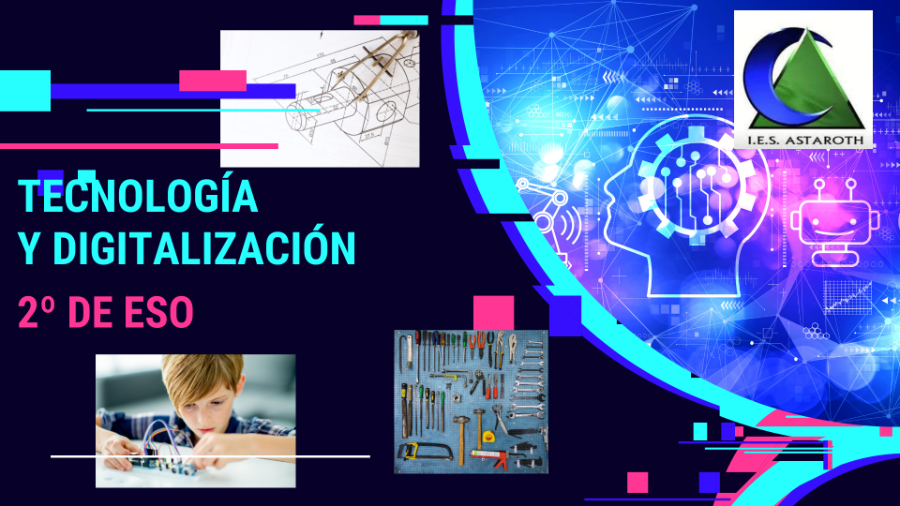

Busca la programación de TyD 2º ESO en la siguiente presentación y explora todo lo que puedes aprender durante el curso:

Busca la programación de TyD 2º ESO en la siguiente presentación y explora todo lo que puedes aprender durante el curso:
Entra en el enlace
Entre el 15 y el 30 de septiembre. 4 sesiones aproximadamente
Obra publicada con Licencia Creative Commons Reconocimiento Compartir igual 4.0